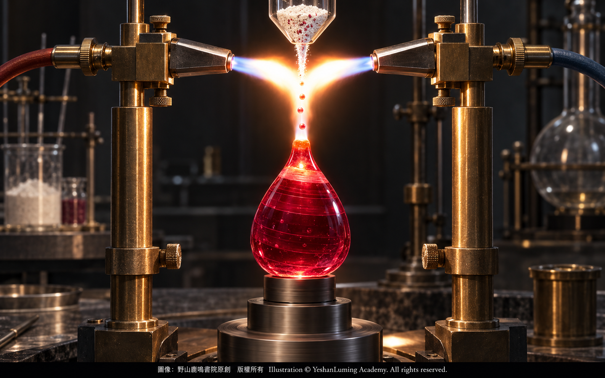
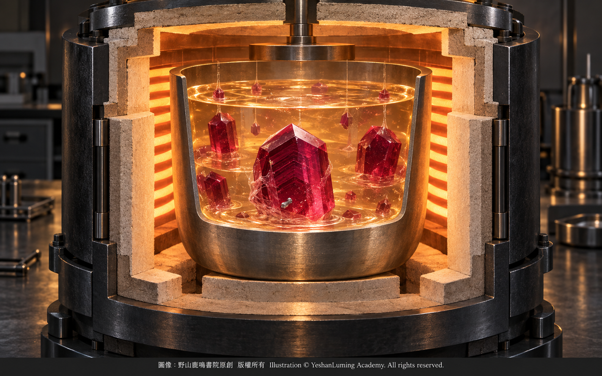
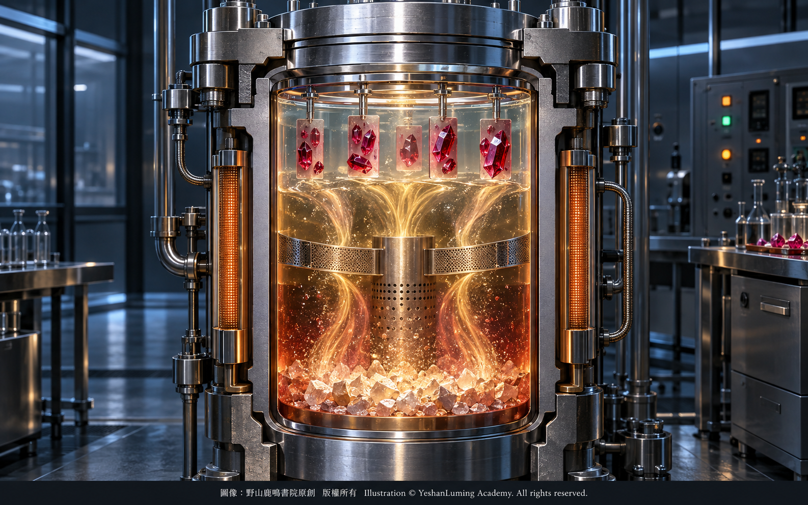

鏡頭下的真假謎局：天然與人造紅寶石的顯微鏡秘密A Mystery of True and False Beneath the Lens · The Microscopic Secrets of Natural and Synthetic Rubies
The World of Gemstones · Ruby SeriesA Mystery of True and False Beneath the Lens · The Microscopic Secrets of Natural and Synthetic Rubies
The World of Gemstones · Ruby Series鏡頭下的真假謎局：天然與人造紅寶石的顯微鏡秘密
寶石世界·紅寶石篇
寶石世界·紅寶石篇（102）The World of Gemstones · Ruby Series (102)
當你手中握著一顆璀璨奪目的紅寶石，看著它在陽光下閃爍著濃郁而鮮明的紅色光芒時，你是否曾經想過：這抹驚心動魄的紅色，究竟來自地殼深處漫長而複雜的地質孕育，還是在不久以前，由科學家在實驗室裡培育出來的？
作為一名寶石鑑定師，在我們走進實驗室的職業生涯中，最常被問到的問題永遠是：「這顆紅寶石是真的嗎？」
然而，在現代寶石學的世界裡，這句看似簡單的話，其實包含著幾個完全不同的問題：它是不是紅寶石？它是天然形成的，還是人工合成的？它是否經過加熱、擴散或裂隙充填等處理？
首先需要分清楚的，是「仿製品」與「合成品」之間的區別。
紅寶石仿製品只是外觀與紅寶石相似，本身卻不是紅寶石。紅色玻璃、某些紅色石榴石、紅色尖晶石以及拼合石，都可能被用來仿冒紅寶石。這些材料的化學成分、晶體結構、硬度、折射率和光學性質與紅寶石不同，通過基本的寶石學測試，通常不難加以區分。
真正考驗鑑定師知識與經驗的，是合成紅寶石（Synthetic Ruby）。
合成紅寶石不是普通的假石頭。它與天然紅寶石具有基本相同的化學成分與晶體結構，也具有十分接近的硬度、折射率和其他寶石學性質。從礦物學角度來說，它同樣是由三氧化二鋁組成、由鉻元素致色的紅色剛玉。
兩者真正的區別，不在於一個是不是紅寶石，而在於形成環境完全不同：天然紅寶石誕生於地殼之中，經歷漫長而複雜的地質作用；合成紅寶石則由人類在實驗室所控制的溫度、壓力和化學環境中培育形成。
合成紅寶石在鐘錶軸承、雷射技術、精密儀器、工業材料與時尚珠寶領域，都是重要的科學成果。然而，在收藏級彩色寶石市場上，天然與合成來源代表著完全不同的稀有性和價值。如果合成紅寶石未經披露便被當作天然紅寶石出售，就會構成嚴重的商業欺騙。
當你手中握著一顆璀璨奪目的紅寶石，看著它在陽光下閃爍著濃郁而鮮明的紅色光芒時，你是否曾經想過：這抹驚心動魄的紅色，究竟來自地殼深處漫長而複雜的地質孕育，還是在不久以前，由科學家在實驗室裡培育出來的？
作為一名寶石鑑定師，在我們走進實驗室的職業生涯中，最常被問到的問題永遠是：「這顆紅寶石是真的嗎？」
然而，在現代寶石學的世界裡，這句看似簡單的話，其實包含著幾個完全不同的問題：它是不是紅寶石？它是天然形成的，還是人工合成的？它是否經過加熱、擴散或裂隙充填等處理？
首先需要分清楚的，是「仿製品」與「合成品」之間的區別。
紅寶石仿製品只是外觀與紅寶石相似，本身卻不是紅寶石。紅色玻璃、某些紅色石榴石、紅色尖晶石以及拼合石，都可能被用來仿冒紅寶石。這些材料的化學成分、晶體結構、硬度、折射率和光學性質與紅寶石不同，通過基本的寶石學測試，通常不難加以區分。
真正考驗鑑定師知識與經驗的，是合成紅寶石（Synthetic Ruby）。
合成紅寶石不是普通的假石頭。它與天然紅寶石具有基本相同的化學成分與晶體結構，也具有十分接近的硬度、折射率和其他寶石學性質。從礦物學角度來說，它同樣是由三氧化二鋁組成、由鉻元素致色的紅色剛玉。
兩者真正的區別，不在於一個是不是紅寶石，而在於形成環境完全不同：天然紅寶石誕生於地殼之中，經歷漫長而複雜的地質作用；合成紅寶石則由人類在實驗室所控制的溫度、壓力和化學環境中培育形成。
合成紅寶石在鐘錶軸承、雷射技術、精密儀器、工業材料與時尚珠寶領域，都是重要的科學成果。然而，在收藏級彩色寶石市場上，天然與合成來源代表著完全不同的稀有性和價值。如果合成紅寶石未經披露便被當作天然紅寶石出售，就會構成嚴重的商業欺騙。
要辨別兩者，我們首先需要借助寶石顯微鏡，把視線深入紅寶石的內部世界，觀察它的生長結構與包裹體（Inclusions）。
寶石學家常說，包裹體是寶石的「指紋」，也是大自然保存在晶體內部的時空膠囊。
許多天然紅寶石在結晶及後期地質作用中，會將周圍的微小礦物、流體或其他物質包裹其中。晶體還可能在壓力作用下產生裂隙，隨後又被含有各種成分的流體部分修復，形成複雜的癒合裂隙。
在顯微鏡下，天然紅寶石中有時可以看到如絲絹般細密的金紅石針狀包裹體（Rutile Needles）。這些金紅石針通常沿著剛玉的晶體方向排列，彼此形成大約60度或120度的交角，像一陣凝固在寶石深處的細雨。當大量細密絲絹以適當方式排列時，還可能形成星光紅寶石所特有的星光效應。
我們也可能看到如同指紋或羽毛般蔓延的癒合裂隙，其中可以包含極其微小的液體、氣體與固體物質。除此之外，天然紅寶石中還可能出現方解石、磷灰石、尖晶石、鋯石以及其他天然礦物晶體。
不同產地、不同地質類型的紅寶石，包裹體組合并不完全相同。同一產地的紅寶石，也不一定都具有完全相同的內部特徵。因此，這些包裹體是天然來源的重要證據，但鑑定師不能只看見某一個特徵，就立即作出全部結論。
當我們把一顆最常見的焰熔法合成紅寶石放到顯微鏡下時，則可能看到完全不同的景象。
焰熔法又稱維爾納葉法（Verneuil Method），由法國化學家奧古斯特·維爾納葉（Auguste Verneuil）在十九世紀末至二十世紀初發展成熟。這種方法讓極細的氧化鋁粉末與致色元素通過高溫火焰熔化，熔滴落在下方的支座上，逐漸堆積成梨形或棒狀的合成剛玉晶體。
與天然環境中緩慢而複雜的晶體生長相比，焰熔法的速度極快，一個晶體可以在數小時內生長完成。快速生長以及熔融表面的形態，會在晶體內留下具有代表性的弧形生長紋（Curved Growth Lines）。
在適當的照明和觀察方向下，這些弧形紋理像黑膠唱片上的細密刻紋，一條接著一條延伸。天然紅寶石較常出現平直、角狀或與晶體結構一致的生長分帶；焰熔法合成紅寶石所呈現的弧形生長紋，則是判斷其合成來源的重要證據。
焰熔法合成紅寶石中，還可能出現圓形、橢圓形或拉長狀的氣泡。這些氣泡有時單獨存在，有時成群排列，也可能伴隨著弧形生長紋共同出現。
不過，鑑定師必須保持謹慎。天然寶石的流體包裹體中也可能含有氣相，某些氣泡同樣可能呈近似圓形。因此，不能只看到一個圓形氣泡便斷定寶石一定是焰熔法合成品。只有把氣泡的形態、所處環境、排列方式與弧形生長紋等證據結合起來，結論才更加可靠。
合成紅寶石也不一定全部「乾淨無瑕」。有些焰熔法合成品淨度很高，有些卻含有明顯的氣泡、未熔粉末、裂隙或其他生長缺陷。相反，一些天然紅寶石也可能相當純淨。因此，「太乾淨」只能引起鑑定師的警覺，不能成為判斷合成來源的單獨證據。
如果說焰熔法合成紅寶石往往能夠通過弧形生長紋和氣泡暴露身份，那麼助熔劑法合成紅寶石，則可能帶來更加複雜的挑戰。
助熔劑法（Flux Method）不再追求焰熔法那樣的高速生長。科學家將氧化鋁、致色元素與助熔劑放入耐高溫坩堝，在高溫環境中讓原料逐漸溶解，再緩慢結晶成紅寶石。整個生長過程可能持續數月。
由於生長速度較慢，助熔劑法合成紅寶石通常不具有焰熔法典型的弧形生長紋，反而可能形成平直或角狀的生長結構，某些內部特徵甚至與天然紅寶石十分相似。
某些助熔劑法合成紅寶石中，可以看到具有金屬光澤的不規則片狀或微粒狀包裹體，其中可能包括來自坩堝的鉑金殘留。當這類金屬包裹體與其他生長特徵共同出現時，可以為判斷合成來源提供重要證據。
助熔劑殘留還可能呈現羽狀、網狀、指紋狀或帷幕狀，有時與天然紅寶石中的癒合裂隙極為相似。鑑定師需要仔細觀察其中物質的形態、光澤、顏色、結構及伴生包裹體，不能只憑它「像不像指紋」作出判斷。
比助熔劑法更加特殊的，是水熱法合成紅寶石（Hydrothermal Synthetic Ruby）。
水熱法采用的是另一條完全不同的生長道路。原料被放入密閉的高壓釜中，在高溫、高壓水溶液和溫度差的作用下逐漸溶解、運移，最後在籽晶上緩慢生長。它所模擬的是天然晶體在富水流體環境中的生長過程，而不是在坩堝中加入助熔劑。
水熱法合成紅寶石可能出現波浪狀、鋸齒狀、人字形或其他與籽晶方向有關的生長結構，也可能伴隨流體狀包裹體、籽晶界面、金屬微粒或其他與生產方法有關的痕跡。
然而，不同生產者、不同設備和不同生長條件形成的水熱法合成紅寶石，內部特徵并不完全相同。有些特徵十分明顯，有些則極其隱蔽。面對這類高品質合成品，單靠普通顯微鏡有時并不足以作出最終結論。
在設備完善的寶石實驗室裡，除了顯微鏡下的觀察，鑑定師還會使用各種光譜與化學分析儀器。
傅立葉變換紅外光譜儀（FTIR）可以檢測與羥基、水分子及其他結構缺陷有關的吸收特徵，并協助比較天然、經處理與水熱法合成紅寶石的光譜差異。然而，不能因為看到某一個羥基吸收峰，便直接斷定它一定是水熱法合成品。
能量色散X射線螢光光譜儀（EDXRF）以及其他微量元素分析設備，則可以研究紅寶石中鈦、釩、鐵、鎵、鉻及其他元素的組合與相對含量。
天然與合成紅寶石的微量元素分布，往往呈現出不同趨勢。某些合成紅寶石中還可能檢出與生長設備、助熔劑或原料有關的鉑、鉍、鉛、鎢、鎳或銅等痕量元素。當這些元素出現在特定組合中時，可以成為判斷合成方法的重要線索。
但是，鉻含量高并不能單獨證明一顆紅寶石是合成品，含有鎵也不能單獨證明它一定是天然紅寶石。不同產地、不同生長方法與不同製造者之間，都可能出現數據重疊。真正可靠的鑑定，必須觀察整體的微量元素「指紋」，并與顯微特徵及其他檢測結果相互印證。
無論科技如何進步，實驗室生長環境與天然紅寶石所經歷的漫長而複雜的地質過程，仍然存在根本差異。人類可以複製紅寶石的主要化學成分與晶體結構，卻也會在晶體中留下不同生長方法所特有的痕跡。
那些在放大鏡下看似瑕疵的裂隙、礦物晶體與絲絹，往往正是天然紅寶石在時間洪流中保存下來的身份線索；而那些弧形生長紋、助熔劑殘留、籽晶界面與特殊微量元素，則可能是實驗室生長環境留下的證據。
看懂顯微鏡下的微觀世界，我們才能在面對一顆近乎完美的紅寶石時，既不盲目崇拜它的淨度，也不會輕易忽略它所暴露出的人工生長痕跡。
這正是寶石鑑定最迷人的地方：在方寸之間尋找證據，在細微之處辨識天然的偉大與人類科技的工藝。
必須強調，顯微鏡下沒有任何一項孤立特徵，可以在所有情況下單獨完成天然與合成紅寶石的鑑別。可靠的結論，應當建立在生長結構、包裹體、基本寶石學性質、光譜反應與微量元素分析等多項證據彼此印證的基礎之上。
為了方便讀者未來在鑑定、採購或與客戶溝通時作為專業參考，下面將天然紅寶石與幾種主要合成紅寶石的顯微特徵綜合整理如下。
天然紅寶石（Natural Ruby）中較具代表性的內部特徵，包括沿晶體方向排列的金紅石針狀包裹體，也就是俗稱的「絲絹」；指紋狀或羽狀癒合裂隙；平直、角狀或近似六方特徵的生長分帶；以及方解石、磷灰石、尖晶石、鋯石等天然礦物晶體。這些特徵會隨產地、地質環境及後期處理而有所不同。
焰熔法合成紅寶石（Flame-Fusion Synthetic Ruby）中，較具代表性的特徵是弧形生長紋，以及圓形、橢圓形或拉長狀氣泡。部分樣品也可能含有未熔粉末、裂隙或其他快速生長形成的缺陷。

Click to enlarge
助熔劑法合成紅寶石（Flux-Grown Synthetic Ruby）中，可能出現羽狀、網狀、指紋狀或帷幕狀助熔劑殘留；某些樣品還可見具有金屬光澤的鉑金微粒或片狀包裹體，以及平直、角狀或其他與緩慢生長有關的結構。

Click to enlarge
水熱法合成紅寶石（Hydrothermal Synthetic Ruby）中，可能出現波浪狀、鋸齒狀、人字形或其他與籽晶方向有關的生長結構，并可能伴隨流體狀包裹體、籽晶界面、金屬微粒，以及特定的紅外光譜和微量元素特徵。

Click to enlarge
這些資料可以幫助我們建立初步的觀察方向，卻不能取代完整的寶石鑑定程序。對來源不明、價值較高或內部特徵存在矛盾的紅寶石，最穩妥的做法，仍然是送交設備完善、經驗豐富的權威寶石實驗室進行檢測。
在顯微鏡下，天然紅寶石與合成紅寶石都擁有各自令人驚嘆的微觀世界。鑑定的目的，不是貶低人類創造的合成晶體，而是準確揭示它的真實身份，使天然的歸於天然，合成的歸於合成，讓每一顆紅寶石都以它真正的身世和價值，面對市場與收藏者。
（未完待續）
When you hold a dazzling ruby in your hand and watch its rich, vivid red glow beneath the sunlight, have you ever wondered whether that breathtaking color was born through a long and complex geological process deep within the earth’s crust, or cultivated only recently by scientists in a laboratory?
Throughout our careers as gemologists working in laboratories, the question we are asked more often than any other is always the same: “Is this ruby real?”
Yet in the world of modern gemology, this seemingly simple question actually contains several entirely different questions: Is it truly ruby? Did it form naturally, or was it synthesized by humans? Has it undergone heat treatment, diffusion, fracture filling, or some other form of treatment?
The first distinction we must understand is the difference between an “imitation” and a “synthetic.”
A ruby imitation merely resembles ruby in appearance but is not itself ruby. Red glass, certain red garnets, red spinel, and assembled stones can all be used to imitate ruby. Their chemical composition, crystal structure, hardness, refractive index, and optical properties differ from those of ruby, so they can usually be separated without great difficulty through basic gemological testing.
The material that truly tests a gemologist’s knowledge and experience is synthetic ruby.
Synthetic ruby is not simply a fake stone. It has essentially the same chemical composition and crystal structure as natural ruby, as well as very similar hardness, refractive index, and other gemological properties. From a mineralogical perspective, it is also red corundum composed of aluminum oxide and colored by chromium.
The true distinction between the two is not whether one of them is ruby, but that they formed in completely different environments. Natural ruby was born within the earth’s crust and underwent long and complex geological processes, while synthetic ruby was grown by humans under carefully controlled conditions of temperature, pressure, and chemical composition in a laboratory.
Synthetic ruby is an important scientific achievement used in watch bearings, laser technology, precision instruments, industrial materials, and fashion jewelry. In the market for collectible colored gemstones, however, natural and synthetic origins represent entirely different degrees of rarity and value. If a synthetic ruby is sold as natural without proper disclosure, it constitutes serious commercial deception.
When you hold a dazzling ruby in your hand and watch its rich, vivid red glow beneath the sunlight, have you ever wondered whether that breathtaking color was born through a long and complex geological process deep within the earth’s crust, or cultivated only recently by scientists in a laboratory?
Throughout our careers as gemologists working in laboratories, the question we are asked more often than any other is always the same: “Is this ruby real?”
Yet in the world of modern gemology, this seemingly simple question actually contains several entirely different questions: Is it truly ruby? Did it form naturally, or was it synthesized by humans? Has it undergone heat treatment, diffusion, fracture filling, or some other form of treatment?
The first distinction we must understand is the difference between an “imitation” and a “synthetic.”
A ruby imitation merely resembles ruby in appearance but is not itself ruby. Red glass, certain red garnets, red spinel, and assembled stones can all be used to imitate ruby. Their chemical composition, crystal structure, hardness, refractive index, and optical properties differ from those of ruby, so they can usually be separated without great difficulty through basic gemological testing.
The material that truly tests a gemologist’s knowledge and experience is synthetic ruby.
Synthetic ruby is not simply a fake stone. It has essentially the same chemical composition and crystal structure as natural ruby, as well as very similar hardness, refractive index, and other gemological properties. From a mineralogical perspective, it is also red corundum composed of aluminum oxide and colored by chromium.
The true distinction between the two is not whether one of them is ruby, but that they formed in completely different environments. Natural ruby was born within the earth’s crust and underwent long and complex geological processes, while synthetic ruby was grown by humans under carefully controlled conditions of temperature, pressure, and chemical composition in a laboratory.
Synthetic ruby is an important scientific achievement used in watch bearings, laser technology, precision instruments, industrial materials, and fashion jewelry. In the market for collectible colored gemstones, however, natural and synthetic origins represent entirely different degrees of rarity and value. If a synthetic ruby is sold as natural without proper disclosure, it constitutes serious commercial deception.
To distinguish between them, we must first turn to the gemological microscope, directing our gaze into the ruby’s inner world to examine its growth structures and inclusions.
Gemologists often say that inclusions are a gemstone’s “fingerprints,” as well as time capsules preserved by nature within the crystal.
As many natural rubies crystallize and undergo later geological processes, they may enclose tiny minerals, fluids, or other substances from their surroundings. Crystals may also develop fractures under pressure, which can subsequently be partially healed by fluids carrying various components, producing complex healed fissures.
Under the microscope, natural ruby may sometimes reveal fine rutile needle inclusions resembling delicate silk. These rutile needles generally align with the crystallographic directions of corundum, intersecting at angles of approximately 60 or 120 degrees, like a fine rain frozen deep within the gemstone. When abundant, delicate silk is arranged in the proper orientation, it can also produce the asterism characteristic of star ruby.
We may also observe healed fissures spreading like fingerprints or feathers and containing extremely small liquid, gaseous, and solid materials. Natural ruby may additionally contain crystals of calcite, apatite, spinel, zircon, and other natural minerals.
Rubies from different sources and geological environments do not possess exactly the same combinations of inclusions. Even rubies from the same source do not necessarily display identical internal features. These inclusions can therefore provide important evidence of natural origin, but a gemologist cannot reach a complete conclusion immediately after observing only one feature.
When we place one of the most common flame-fusion synthetic rubies beneath the microscope, we may encounter an entirely different scene.
The flame-fusion process, also known as the Verneuil method, was developed and perfected by the French chemist Auguste Verneuil from the late nineteenth to the early twentieth century. In this process, extremely fine aluminum oxide powder and coloring elements are melted as they pass through a high-temperature flame. The molten droplets fall onto a support below and gradually accumulate into a pear-shaped or rod-shaped crystal of synthetic corundum.
Compared with the slow and complex growth of crystals in nature, the flame-fusion process is extraordinarily rapid, and a crystal can be grown within a matter of hours. This rapid growth, together with the shape of the molten surface, leaves characteristic curved growth lines within the crystal.
Under suitable lighting and from the proper direction of observation, these curved lines resemble the fine grooves of a vinyl record, extending one after another. Natural ruby more commonly displays straight, angular, or crystallographically consistent growth zoning, while curved growth lines in flame-fusion synthetic ruby provide important evidence of its synthetic origin.
Flame-fusion synthetic ruby may also contain round, oval, or elongated gas bubbles. These bubbles may occur individually or in groups, and they may also appear together with curved growth lines.
A gemologist must nevertheless remain cautious. Fluid inclusions in natural gemstones may also contain a gas phase, and some bubbles can likewise appear nearly round. A ruby therefore cannot be identified as flame-fusion synthetic merely because a single round bubble has been observed. A more reliable conclusion can be reached only by combining the bubble’s shape, environment, and arrangement with evidence such as curved growth lines.
Synthetic rubies are not necessarily all “clean and flawless.” Some flame-fusion synthetics have very high clarity, while others contain obvious gas bubbles, unmelted powder, fractures, or other growth defects. Conversely, some natural rubies can also be remarkably clean. Being “too clean” can therefore alert a gemologist, but it cannot serve as independent proof of synthetic origin.
If flame-fusion synthetic ruby frequently reveals its identity through curved growth lines and gas bubbles, flux-grown synthetic ruby may present a far more complex challenge.
The flux method does not pursue the rapid growth characteristic of flame fusion. Scientists place aluminum oxide, coloring elements, and flux in a heat-resistant crucible, allowing the raw materials to dissolve gradually in a high-temperature environment and then crystallize slowly into ruby. The entire growth process may continue for several months.
Because of this slower growth rate, flux-grown synthetic ruby generally lacks the curved growth lines typical of flame-fusion material. Instead, it may develop straight or angular growth structures, and some of its internal features may even closely resemble those found in natural ruby.
Some flux-grown synthetic rubies may contain irregular plate-like or particulate inclusions with a metallic luster, including platinum residues originating from the crucible. When such metallic inclusions appear together with other growth features, they can provide important evidence of synthetic origin.
Flux residues may also appear feather-like, reticulated, fingerprint-like, or veil-like, sometimes closely resembling healed fissures in natural ruby. A gemologist must carefully examine the form, luster, color, structure, and associated inclusions of the material rather than reaching a conclusion merely from whether it “looks like a fingerprint.”
Even more specialized than the flux method is hydrothermal synthetic ruby.
The hydrothermal method follows an entirely different path of crystal growth. The raw materials are placed inside a sealed autoclave, where they gradually dissolve and migrate through a high-temperature, high-pressure aqueous solution driven by a temperature gradient, before slowly crystallizing upon a seed crystal. This method simulates the growth of natural crystals in a water-rich fluid environment rather than using flux inside a crucible.
Hydrothermal synthetic ruby may display wavy, jagged, chevron-like, or other growth structures associated with the orientation of the seed crystal. It may also contain fluid-like inclusions, seed boundaries, metallic particles, or other traces related to the production process.
However, hydrothermal synthetic rubies produced by different manufacturers, equipment, and growth conditions do not possess exactly the same internal features. Some characteristics are readily visible, while others are extremely subtle. When confronted with high-quality synthetics of this kind, an ordinary microscope alone may sometimes be insufficient to reach a final conclusion.
In a fully equipped gemological laboratory, gemologists use a variety of spectroscopic and chemical analysis instruments in addition to microscopic observation.
Fourier-transform infrared spectroscopy (FTIR) can detect absorption features associated with hydroxyl groups, water molecules, and other structural defects, helping to compare the spectral differences among natural, treated, and hydrothermal synthetic rubies. However, the presence of a single hydroxyl absorption peak does not by itself prove that a ruby is hydrothermal synthetic.
Energy-dispersive X-ray fluorescence spectroscopy (EDXRF) and other trace-element analytical instruments can be used to examine the combinations and relative concentrations of titanium, vanadium, iron, gallium, chromium, and other elements within ruby.
The distributions of trace elements in natural and synthetic rubies often display different trends. Certain synthetic rubies may also contain trace amounts of platinum, bismuth, lead, tungsten, nickel, or copper associated with the growth equipment, flux, or raw materials. When these elements occur in particular combinations, they can provide important clues to the method of synthesis.
A high chromium concentration, however, cannot independently prove that a ruby is synthetic, just as the presence of gallium cannot independently prove that it is natural. Data from different geographic sources, growth methods, and manufacturers may overlap. Reliable identification requires examination of the complete trace-element “fingerprint” and confirmation through microscopic features and other test results.
No matter how far technology advances, fundamental differences will remain between a laboratory growth environment and the long, complex geological processes experienced by natural ruby. Humans can reproduce ruby’s principal chemical composition and crystal structure, but each growth method also leaves its own distinctive traces within the crystal.
The fissures, mineral crystals, and silk that may appear to be flaws beneath magnification are often clues to the identity that natural ruby has preserved through the passage of time. Curved growth lines, flux residues, seed boundaries, and unusual trace elements, by contrast, may bear witness to a laboratory growth environment.
Only by understanding this microscopic world can we encounter a nearly perfect ruby without blindly worshiping its clarity or carelessly overlooking the evidence of artificial growth that it may reveal.
This is the true fascination of gem identification: searching for evidence within a tiny space and distinguishing, through the smallest details, between the greatness of nature and the craftsmanship of human technology.
It must be emphasized that no single isolated feature under the microscope can distinguish natural from synthetic ruby in every situation. A reliable conclusion must be built upon the mutual confirmation of multiple forms of evidence, including growth structures, inclusions, basic gemological properties, spectroscopic reactions, and trace-element analysis.
For convenient professional reference in future identification, purchasing, or communication with clients, the principal microscopic features of natural ruby and several major types of synthetic ruby are summarized below.
Representative internal features in natural ruby may include rutile needle inclusions aligned with crystallographic directions, commonly known as “silk”; fingerprint-like or feather-like healed fissures; straight, angular, or approximately hexagonal growth zoning; and natural mineral crystals such as calcite, apatite, spinel, and zircon. These characteristics vary according to geographic origin, geological environment, and subsequent treatment.
Representative features of flame-fusion synthetic ruby may include curved growth lines and round, oval, or elongated gas bubbles. Some samples may also contain unmelted powder, fractures, or other defects produced by rapid growth.
Click to enlarge
Flux-grown synthetic ruby may contain feather-like, reticulated, fingerprint-like, or veil-like flux residues. Some samples may also reveal metallic platinum particles or plate-like inclusions, together with straight, angular, or other structures associated with slow growth.
Click to enlarge
Hydrothermal synthetic ruby may display wavy, jagged, chevron-like, or other growth structures related to the orientation of the seed crystal. It may also contain fluid-like inclusions, seed boundaries, metallic particles, and characteristic infrared spectroscopic or trace-element features.
Click to enlarge
This information can help establish a preliminary direction for observation, but it cannot replace a complete gemological identification procedure. When a ruby is of unknown origin, substantial value, or contains conflicting internal features, the safest course is still to submit it to a well-equipped and experienced independent gemological laboratory for testing.
Beneath the microscope, both natural and synthetic rubies possess their own astonishing microscopic worlds. The purpose of identification is not to disparage synthetic crystals created by human ingenuity, but to reveal their true identity accurately—to recognize the natural as natural and the synthetic as synthetic—so that every ruby may enter the market and face collectors with its true origin and value properly disclosed.
(To be continued)